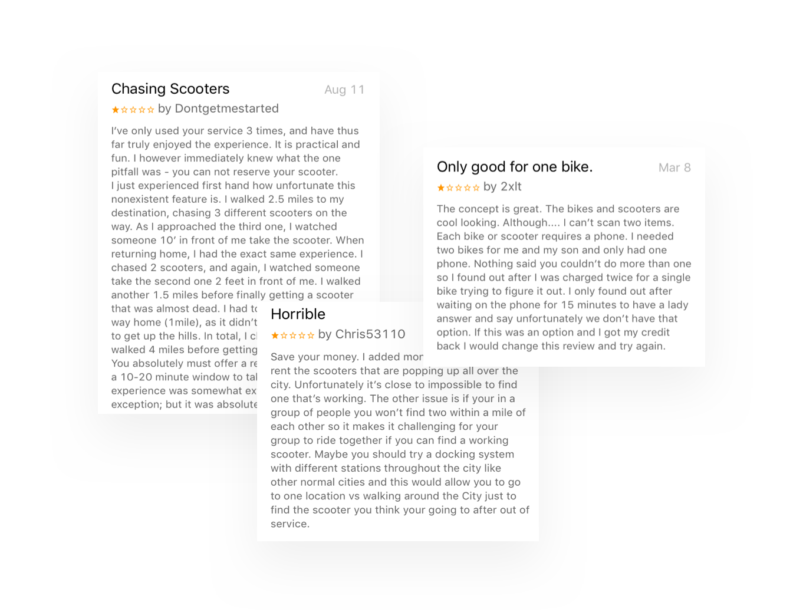
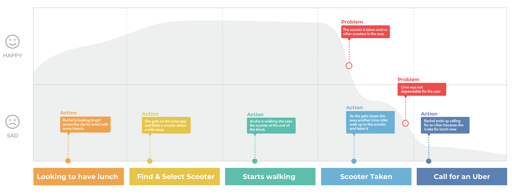
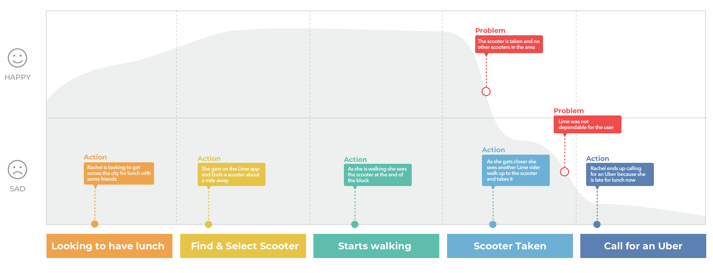
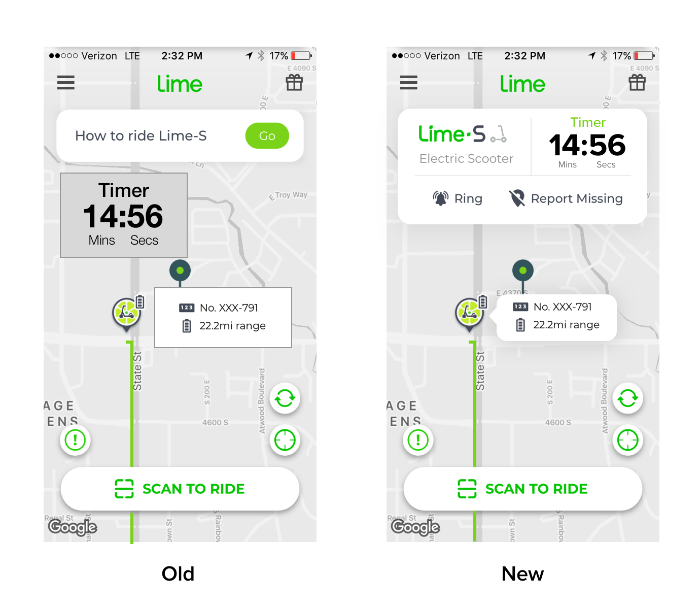

Lessons Learned: Interning w/ a UX Researcher

Problem
During my internship at Workfront, I had the opportunity to work with a UX researcher for a month.
Context
During my internship at Workfront, I had the opportunity to work with a UX researcher for a month.
Context
During my internship at Workfront, I had the opportunity to work with a UX researcher for a month. The lessons I learned may seem obvious to some, but to me, they were valuable experiences in user research. Although UX research practices may vary depending on the organization, I believe my newly learned lessons are applicable to most research roles.
Content of my article:
My assumptions > Reality > What I did > What I learned
My Assumption #1
Prior to coming to Workfront, my experience with UX research consisted of guerrilla testing in university libraries and cafes. On the first day, the VP of UX (Wade Shearer) asked the interns who they wanted to work with throughout the 3-month internship (1 mentor per month). I jumped at the opportunity to work with Trae Winterton, Workfront’s sole UX researcher. When Wade assigned me to work with Trae, this is what I envisioned my first day looking like:

And this photo sums up how I felt about jumping into UX research:

Reality
Imagine this: A huge Excel spreadsheet with questions and answers about a product you have little to no knowledge about sits on your screen. Now, review and analyze it. Then, make a presentation based on your results. That was me. With no context of the product or the testing, I was confused. I thought research was just about testing, observing and interviewing users.
What I Did
During my first few days of the internship, I worked with Trae to create a presentation on the findings from research done at Workfront’s User Conference, LEAP. I combed through an endless spreadsheet of test notes to identify key findings and pull out information necessary to build out graphs.
What I Learned
- UX research isn’t just about conducting tests; it’s also about analyzing results.
- When analyzing data you should always be looking for patterns and trends.
My Assumption #2
After finishing the LEAP research presentation, I expected there to be a happy researcher presenting his/her findings while the team listens intently and starts envisioning iteration ideas for the next round of testing. I thought presenting the research findings would look similar to this meeting:
And this photo sums up how I felt about jumping into UX research:
Reality
As it turns out, people typically question your research. Presenting research findings can end up looking like this if you are not careful.
What I Learned
- Be prepared to defend your research because people will ALWAYS question it.
- Be ok with expressing weaknesses in the research and what you are doing to fix it . This shows others you are constantly trying to refine your research chops.
My Assumption #3
My young, naive UX mind assumed every product team was organized with a researcher to coordinate and conduct research — similar to this dream team:
And this photo sums up how I felt about jumping into UX research:
Reality
In reality, most organizations, including Workfront, typically have a few (or just one) UX researchers who support product teams.
What I did
With only one researcher at Workfront, Trae’s goal is to help educate product teams about different research methods through workshops. I created a card sorting workshop and presented it to product teams. The research workshop consisted of a presentation, workbook, and tutorial video. The video focused on how to build and analyze tests on UsabiliTest.
What I Learned
- How a one-person research team spreads their skills throughout a large organization.
- Have a source of truth for teams to refer to when there are questions. You won’t have time to answer each question directly.
- Build relationships with other departments so people know you and will, consequently, trust your research.
My Assumption #4
Stakeholder interviews look something like this:
Reality
With my role as an intern, stakeholder interviews were more like this:
What I did
To fully understand research goals, I conducted stakeholder interviews remotely and in person. In these interviews, I focused on understanding their research objective and their target user. Here are a few questions I asked each team:
What I Learned
- Involving the designer throughout the research helps give them the feeling of ownership.
- Don’t do all the research for the product team. Instead, make them invest time in research so they value the results.
- If teams do not know what they want to know from research, then work with them until a goal is determined.
- You shouldn’t start research until there is a clear understanding of the objective.
Define
Based on the research, I went through multiple revisions of different problem statements to help to me have a clear understanding of the problem to solve. After that, I built a persona & journey map to refer back to throughout my process.
Problem Statement
How might Lime (the scooter company) help users in a time crunch ensure that they can find and rent an available scooter.
 

User Quotes:
Ideate
After understanding the users & problem deeper, I wrote down as many ideas as possible (even the crazy ones) on a whiteboard to help me think of different ways to solve this problem. Then, I clustered the ideas into similar themes and sections.

Potential feature solution: When Lime riders reach a certain distance from the scooter selected, the app will give them an option to reserve the scooter for a certain price.
Why this idea?
To me I feel like there are a few main value propositions for the business and the end customer:
- Customer trust — with the ability to guarantee an available scooter, Lime riders will trust the service as a dependable way of transportation.
- Profit maximization — through unused scooters being reserved for a price, the business will increase revenue.
- Product differentiation — through creating a more reliable form of transportation, this feature will help separate Lime from other scooter competitors such as Bird or Spin.
Storyboarding

Things I considered:
- What is a fair price?
- How close is a fair distance for reserving a scooter?
- Will the reservation price still help the business make money?
- Are riders willing to pay the extra fee to reserve the scooter?
Reservations - Pricing breakdown
Currently, Lime scooters cost $1.00 to unlock and $0.15 a minute to continue riding. If the rider can reserve the scooter from 0.5 miles away then the price of the reservation depends on how long it takes for the rider to get to the scooter. If the average rider takes 15 mins to walk 0.5 miles to the scooter than that would cost 15 mins * $0.15 = $2.25. Therefore, a fair price for a reservation could be $3.00. That way the business would make an extra $0.75 per reservation.
Sketching
During sketching, I was able to explore potential layouts and user flows for introducing the reservation option to users. As sketched, I determined that there should be two user flows in this feature 1). if a Lime user is already within 0.5 miles from the selected scooter they will automatically have the option to reserve, while in second interaction 2). the user will be notified with a pop-up when they get within the 0.5-mile radius of the scooter.

Test & Iterate
Once I explored different ideas, I wanted to test this idea with Lime customers. I did some qualitative testing with a few screens to test some variations. I then mocked up screens in Sketch to built my prototype in XD. I conducted usability tests with 6 Lime customers.

Research Findings:
- Users understand why there was a required time to get to the scooter
- Users want this feature to be optional
- Users felt 15-minutes was enough time to get to the scooter
- Users want to know they have a 15 minute time limit on the reservation
Usability Issue 1:
The main usability issue that I found was that the users were concerned that they paid $3 for the reservation but were not notified that there was a time limit. To help users be aware of the time limit on the reservation feature, I added a first-time feature interaction. This would allow the user to explore the reservation feature for the first time without committing to payment.

Usability Issue 2:
Users wanted access to the “ring” button on the scooter when they were walking toward their reserved scooter. The ring or bell button makes the scooter the user is searching for ring so they can find it easily. Because of this, I incorporated the timer and ring button into the design.
Final Solution:
This new solution will give Rachel (the persona) a better experience by providing her with a more dependable way of commuting around the city. Rachel will not have to invest time and energy walking around the streets of Boston trying to find a scooter without the assurance that it will still be there when she arrives.
Persona in context
Rachel just received a group text from her friends notifying her that they are meeting up for lunch. She gets on her phone to find a Lime scooter close to her. When she selects a scooter, she discovers a new reservation feature on Lime. Rachel decides to reserve the scooter because she has to get to lunch, eat and get back to the office in only an hour. As she walks to the scooter, it’s ready for her just a few blocks away and she rides to lunch.

Persona in context
Rachel is now comfortable using the reservation feature - especially when she is in a time crunch. Overall, she trusts Lime will get her where she needs to be.
Persona in context
If at any point Rachel wants to turn off this feature, she can go to the settings page and turn it off.
My Successes
After making some changes to the design based on the previous testing, I presented my prototypes to 3 Lime riders and got the following responses:
User Quotes:
After writing up the case study, I sent my work over to a senior designer at Lime and this is the reply I received:

Lessons Learned:
- Understanding the users and problem deeply in the beginning of a project can go a long way
- If you have an idea, make sure you can talk about the "why" of the business
- I found it helpful to write down "things to consider" when deciding on a potential solution

{kind=link}